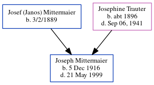

Joseph Mittermaier 1916 - 1999
[ Home ] | [ Calendar ] | [ Surnames Index ] | [ Census Index ] | [ Family History ]The older of 2 children of Josef (Janos) Mittermaier and Josephine Trauter, Joseph Mittermaier, the first cousin once-removed on the mother's side of Michele Copp (née Phillips), was born in Fairfax, Tucker, West Virginia, USA on Dec 5, 19161.
He died on May 21, 1999 in West Orange, Essex, New Jersey, USA.
Parents
- Josef (Janos) was born on 3/2/1889
- Josephine was born c. 1896
Citations
- Pennsylvania, U.S., Marriages, 1852-1968 Ancestry.com Operations, Inc. (Marriage Records. Pennsylvania Marriages. Various County Register of Wills Offices, Pennsylvania.)
Family Tree
Generated by ged2site. Last updated on Jun 6, 2024